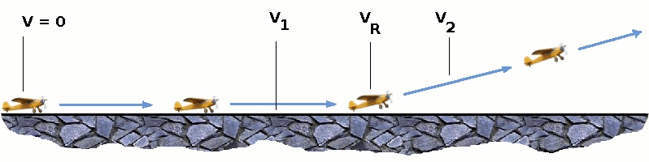
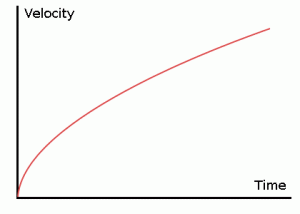
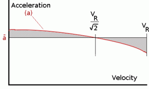
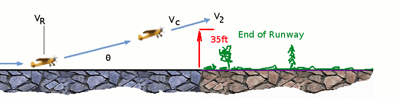

TAKE OFF AND LANDING
Take Off Performance
Take off performance can be predicted using a simple measure of the acceleration of the aircraft along the runway based on force equilibrium.
The forces involved will be,
$T$ – Thrust of propulsion system pushing aircraft along runway.
$D$ – Aerodynamic Drag of vehicle resisting the aircraft motion.
$F$ – Rolling resistance friction due to the contact of wheels or skids on the ground.
During take-off run the imbalance in these forces will produce an acceleration along the runway.
$${dV}/{dt}={T-D-F}/m$$
where ${dV}/{dt}$ is the acceleration along the runway and $m$ is the mass of the vehicle.
Rotation Velocity, $V_R$
The procedure for take-off will be that the vehicle will accelerate until it reaches a safe initial flying speed. The pilot can then rotate the vehicle to an attitude to produce climb lift and it will ascend from the ground. The determination of this safe flying speed or rotation speed, $V_R$, is a critical factor in determining take-off performance.
Take-off rules vary slightly depending on the aircraft category. Small commuter aircraft should be considered as meeting FAR 23 rules, transport category aircraft should comply with FAR 25 rules.
For safety reasons $V_R$ is usually determined as being $1.1 × V_{STALL}$ or $1.05 × V_{MC}$, minimum control speed
which ever is greater. Stall speed, $V_{STALL}$, is the lowest speed that the aircraft can be flown before the airflow starts to separate from wings as the angle of attack becomes too great. The wing is assumed in this case to be in take-off configuration or "clean".
It can be calculated based on knowledge of the aircraft take-off configuration and hence the maximum achievable lift coefficient $C_L(max)$. As shown in the previous section , to maintain level flight the lift produced must equal the weight, hence the stall speed can be calculated as,
$$V_{stall}=√{W/{1/2C_{L(max)}ρS}$$
Minimum control speed, $V_{MC}$ is a more complex calculation and requires knowledge of the stall characteristics of the tailplane and elevator. For conventional aircraft there is only a small difference between $V_R$ calculations based on stall speed or minimum control speed.
As well as rotation speed there are other safety considerations as shown in the following Figure.

Small commuter aircraft :
$V_1$ – Abort decision speed. Below this speed the take-off can be safely aborted. After this there will not be sufficient runway length to allow the aircraft to decelerate to a stop.
$V_2$ – Safe climb speed. $V_2$ must be no less than $1.2 × V_{STALL}$. Below this speed aircraft cannot attain sufficient climb rate.
Transport Aircraft :
$V_R$ must not be less than $V_1$
$V_R$ must be greater than $1.05 × V_{MC}$
$V_R$ must be set so that aircraft achieves $V_2$ before reaching a height of 35ft above the runway surface.
Aircraft must climb at a minimum gradient to avoid obstacles at the end of the runway. With engine failure on multi-engined aircraft, this speed should still be achievable.
Thrust
The thrust of gas turbine or turbofan engines will be relatively constant during take-off. A good assumption is to use the manufacturer's values for maximum static thrust for take-off calculations.
The thrust of a propeller driven aircraft can be found from the given shaft horsepower data for the engine and the use of the equations using propeller efficiency given in the previous section.
$$T={P_{shaft}×η}/V$$
It is critical to correctly estimate the propeller efficiency for the particular aircraft velocity along the runway. At $V=0$ the efficiency is 0 so the above equation makes no sense. At $V=V_R$ the efficiency will be in the range 50% to 80% depending on the type of propeller system used and the thrust value at this point will be easy to obtain. In practice, the thrust obtained throughout the take-off roll is roughly constant so this end point value is a good approximation from $V=0$ to $V=V_R$
Drag
The resistance to motion due to the air viscosity will give a drag of
$$D=C_D1/2ρ.V^2S$$
where $C_D$ can be considered constant and calculated using the formula shown in the previous section
Although Drag Coefficient is constant, Drag will increase in proportion to the square of velocity.
Rolling Resistance
The friction between aircraft and runway will be proportional to the normal force exerted by the aircraft on the runway.
$$F=μ(W-L)$$
The normal force will be the difference between Weight of aircraft and Lift, the friction coefficient will be typically of a magnitude of 0.02 for a standard tarmac runway.


Average
acceleration and distance to rotation
The rate of change of velocity can be predicted at any point on the take-off roll by substituting results for $T$, $D$ and $F$ into the initial equation for $dV\/dt$. The subsequent velocity at any point can be found by integrating this resulting equation and the distance traveled found by then integrating the velocity.
Typically acceleration will be dominated by the drag component as thrust, weight and friction are relatively constant during this period. This leads to the result shown where acceleration is inversely proportional to velocity squared.
Due to the quadratic nature of acceleration change, an average value, $({dV}/{dt})_{avg} = a↖{-}$ , can be used for the take-off run. This average acceleration can be found at the point where,
$$V=V_R/√{2}$$
This average acceleration can be used to simplify calculations and the take-off run can be calculated as an equivalent constant acceleration over the complete period of time ($t_R$) taken to get from 0 to $V_R$. For a constant acceleration take-off calculation,
$$V_R=a↖{-}t_R\text" and distance travelled " s=1/2a↖{-}t_R^2$$
Rearranging leads to a relatively simple calculation to predict distance to rotation point.
$$s_1=1/2 V_R^2/a↖{-}$$
Obstacle Clearance Distance
From the rotation point, the end of the runway can be defined by the requirement to clear a 35ft obstacle at the end. During rotation it can be assumed that any residual excess thrust is absorbed in overcoming the lift induced drag as the aircraft begins to climb. Acceleration reduces and a constant flight speed during this climb phase can be assumed. The distance along the ground from rotation point to obstacle clearance point with thus be,
$$s_2=35/{\tan(θ)}\text" ft"$$

This distance estimate will require knowledge of the climb gradient which can be calculated by using the methods in the following section on Climb and Descent.
Note that further obstacles may be encountered on the flight path away from the end of the runway. At many airfields, there are published climb gradients that must be achieved in order to guarantee a safe departure from the airport.
Take-Off (Balanced) Field Length
The required length of runway will be the sum of the distance required to get to rotation speed and the extra length required to clear a 35ft obstacle or the extra length required to allow for rapid braking if the pilot decides to abort take-off at the decision speed $V_1$.
This length will typically be considerably longer than the distance required to achieve rotation (flying) speed. A rough approximation is that runway total length is around $2 × s_1$
Distance to $V_1$ can be calculated in a manner similar to that shown for $V_R$. The calculation of braking distance will require knowledge of the maximum braking friction coefficient that can be generated by the aircraft. This information should be available from manufacturer's data. Braking distance calculations should also be done without any assumption of reverse thrust from engines as during a take-off abort, engine power may not be available.
Take-Off Charts
As atmospheric conditions may vary from day to day and an aircraft may be required to take-off from numerous differing runways, a simple method of calculating required runway distance is needed for each separate take-off. This is done by manufacturers providing take-off requirement charts or tables as part of the aircraft operating manual. A typical chart is shown in the following Figure.
Atmospheric conditions of pressure ($P_{atm}$) and temperature ($T_{atm}$) are identified on the first graph of the chart. The resulting datapoint is interpolated onto the aircraft weight graph. The appropriate curve is followed to the known aircraft weight point on the graph and then this data point is interpolated to the headwind/tailwind graph. Again the relevant curve is followed to the appropriate value of wind and the datapoint interpolated onto the obstacle height graph. The relevant line on the obstacle height graph is followed to the appropriate obstacle height, typically 35ft or 10m, although in this case a 5m height has been used. Once the relevant point on the obstacle height graph has been found, the required take-off distance can be read directly from the right hand scale.
In the case of many smaller aircraft manufacturers the chart is replaced by tabulated values where the aircraft parameters such as weight and rotation speed are preset. The distance can be read straight from the appropiate location in the table.
eg.
Landing
The landing run can be calculated in a similar fashion to the take off distance. The aim is again to minimise the distance.
The touch down velocity should be approximately the stall speed of the aircraft in landing configuration. This will be achieved by a pitch manoeuvre during the flare portion of the approach which which increase drag an decelerate the aircraft to minimum flying speed.
The deceleration on the landing roll from $V_{TD}$ to $V=0$ will be accomplished by braking and reverse thrust. This can be solved by the average acceleration approach that was used to estimate the take-off roll.
$${dV}/{dt}={-T-D-F}/m$$
The negative acceleration or deceleration value will be based on friction coefficient for maximum braking and the value of reverse thrust (if available).